Followup to: Causality: The Fabric of Real Things [http://lesswrong.com/lw/eva/the_fabric_of_real_things/]
Previous meditation [http://lesswrong.com/lw/eva/the_fabric_of_real_things/#7lqh]:
"You say that a universe is a connected fabric of causes and effects. Well, that's a very Western viewpoint - that it's all about mechanistic, deterministic stuff. I agree that anything else is outside the realm of science, but it can still be real, you know. My cousin is psychic - if you draw a card from his deck of cards, he can tell you the name of your card before he looks at it. There's no mechanism for it - it's not a causal thing that scientists could study - he just does it. Same thing when I commune on a deep level with the entire universe in order to realize that my partner truly loves me. I agree that purely spiritual phenomena are outside the realm of causal processes that can be studied by experiments, but I don't agree that they can't be real."
Reply:
Fundamentally, a causal model is a way of factorizing our uncertainty about the universe. One way of viewing a causal model is as a structure of deterministic functions plus uncorrelated sources of background uncertainty.
Let's use the Obesity-Exercise-Internet model (reminder: which is totally made up) as an example again:
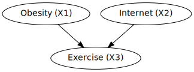
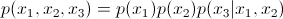
We can also view this as a set of deterministic functions Fi, plus uncorrelated background sources of uncertainty Ui:
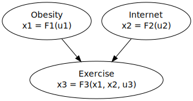
This says is that the value x3 - how much someone exercises - is a function of how obese they are (x1), how much time they spend on the Internet (x2), plus some other background factors U3 which don't correlate to anything else in the diagram, all of which collectively determine, when combined by the mechanism F3, how much time someone spends exercising.
There might be any number of different real factors involved in the possible states of U3 - like whether someone has a personal taste for jogging, whether they've ever been to a trampoline park and liked it, whether they have some gene that affects exercise endorphins. These are all different unknown background facts about a person, which might affect whether or not they exercise, above and beyond obesity and Internet use.
But from the perspective of somebody building a causal model, so long as we don't have anything else in our causal graph that correlates with these factors, we can sum them up into a single factor of subjective uncertainty, our uncertainty U3 about all the other things that might add up to a force for or against exercising. Once we know that someone isn't overweight and that they spend a lot of time on the Internet, all our uncertainty about those other background factors gets summed up with those two known factors and turned into a 38% conditional probability that the person exercises frequently.
And the key condition on a causal graph is that if you've properly described your beliefs about the connective mechanisms Fi, all your remaining uncertainty Ui should be conditionally independent:
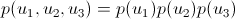
or more generally
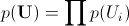
And then plugging those probable Ui into the strictly deterministic Fi should give us back out our whole causal model - the same joint probability table over the observable Xi.
Hence the idea that a causal model factorizes uncertainty. It factorizes out all the mechanisms that we believe connect variables, and all remaining uncertainty should be uncorrelated so far as we know.
To put it another way, if we ourselves knew about a correlation between two Ui that wasn't in the causal model, our own expectations for the joint probability table couldn't match the model's product
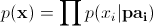
and all the theorems about causal inference would go out the window. Technically, the idea that the Ui are uncorrelated is known as the causal Markov condition [http://en.wikipedia.org/wiki/Causal_Markov_condition].
What if you realize that two variables actually are correlated more than you thought? What if, to make the diagram correspond to reality, you'd have to hack it to make some Ua and Ub correlated?
Then you draw another arrow from Xa to Xb, or from Xb to Xa; or you make a new node representing the correlated part of Ua and Ub, Xc, and draw arrows from Xc to Xa and Xb.
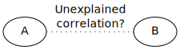
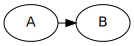 vs. 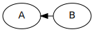 vs. 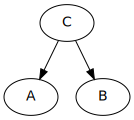
(Or you might have to draw some extra causal arrows somewhere else; but those three changes are the ones that would solve the problem most directly.)
There was apparently at one point - I'm not sure if it's still going on or not - this big debate about the true meaning of randomization in experiments, and what counts as 'truly random'. Is your randomized experiment invalidated, if you use a merely pseudo-random algorithm instead of a thermal noise generator? Is it okay to use pseudo-random algorithms? Is it okay to use shoddy pseudo-randomness that a professional cryptographer would sneer at? Clearly, using 1-0-1-0-1-0 on a list of patients in alphabetical order isn't random enough... or is it? What if you pair off patients in alphabetical order, and flip a coin to assign one member of each pair to the experimental group and the control? How random is random?
 [http://xkcd.com/221/]
[http://xkcd.com/221/]
Understanding that causal models factorize uncertainty leads to the realization that "randomizing" an experimental variable means using randomness, a Ux for the assignment, which doesn't correlate with your uncertainty about any other Ui. Our uncertainty about a thermal noise generator seems strongly guaranteed to be uncorrelated with our uncertainty about a subject's economic status, their upbringing, or anything else in the universe that might affect how they react to Drug A...
...unless somebody wrote down the output of the thermal noise generator, and then used it in another experiment on the same group of subjects to test Drug B. It doesn't matter how "intrinsically random" that output was - whether it was the XOR of a thermal noise source, a quantum noise source, a human being's so-called free will, and the world's strongest cryptographic algorithm - once it ends up correlated to any other uncertain background factor, any other Ui, you've invalidated the randomization. That's the implicit problem in the XKCD cartoon above.
But picking a strong randomness source, and using the output only once, is a pretty solid guarantee this won't happen.
Unless, ya know, you start out with a list of subjects sorted by income, and the randomness source randomly happens to put out 111111000000. Whereupon, as soon as you look at the output and are no longer uncertain about it, you might expect correlation and trouble. But that's a different and much thornier issue in Bayesianism vs. frequentism.
If we take frequentist ideas about randomization at face value, then the key requirement for theorems about experimental randomization to be applicable, is for your uncertainty about patient randomization to not correlate with any other background facts about the patients. A double-blinded study (where the doctors don't know patient status) ensures that patient status doesn't correlate with the doctor's beliefs about a patient leading them to treat patients differently. Even plugging in the fixed string "1010101010" would be sufficiently random if that pattern wasn't correlated to anything important; the trouble is that such a simple pattern could very easily correlate with some background effect, and we can believe in this possible correlation even if we're not sure what the exact correlation would be.
(It's worth noting that the Center for Applied Rationality ran the June minicamp experiment using a standard but unusual statistical method of sorting applicants into pairs that seemed of roughly matched prior ability / prior expected outcome, and then flipping a coin to pick one member of each pair to be admitted or not admitted that year. This procedure means you never randomly improbably get an experimental group that would, once you actually looked at the random numbers, seem much more promising or much worse than the control group in advance - where the frequentist guarantee that you used an experimental procedure where this usually doesn't happen 'in the long run', might be cold comfort if it obviously had happened this time once you looked at the random numbers. Roughly, this choice reflects a difference between frequentist ideas about procedures that make it hard for scientists to obtain results unless their theories are true, and then not caring about the actual random numbers so long as it's still hard to get fake results on average; versus a Bayesian goal of trying to get the maximum evidence out of the update we'll actually have to perform after looking at the results, including how the random numbers turned out on this particular occasion. Note that frequentist ethics are still being obeyed - you can't game the expected statistical significance of experimental vs. control results by picking bad pairs, so long as the coinflips themselves are fair!)
Okay, let's look at that meditation again:
"You say that a universe is a connected fabric of causes and effects. Well, that's a very Western viewpoint - that it's all about mechanistic, deterministic stuff. I agree that anything else is outside the realm of science, but it can still be real, you know. My cousin is psychic - if you draw a card from his deck of cards, he can tell you the name of your card before he looks at it. There's no mechanism for it - it's not a causal thing that scientists could study - he just does it. Same thing when I commune on a deep level with the entire universe in order to realize that my partner truly loves me. I agree that purely spiritual phenomena are outside the realm of causal processes that can be studied by experiments, but I don't agree that they can't be real."
Well, you know, you can stand there all day, shouting all you like about how something is outside the realm of science, but if a picture of the world has this...
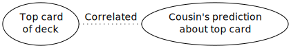
...then we're either going to draw an arrow from the top card to the prediction; an arrow from the prediction to the top card (the prediction makes it happen!); or arrows from a third source to both of them (aliens are picking the top card and using telepathy on your cousin... or something; there's no rule you have to label your nodes).
More generally, for me to expect your beliefs to correlate with reality, I have to either think that reality is the cause of your beliefs, expect your beliefs to alter reality, or believe that some third factor is influencing both of them.
This is the more general argument that "To draw an accurate map of a city, you have to open the blinds and look out the window and draw lines on paper corresponding to what you see; sitting in your living-room with the blinds closed, making stuff up, isn't going to work."
Correlation requires causal interaction; and expecting beliefs to be true means expecting the map to correlate with the territory. To open your eyes and look at your shoelaces is to let those shoelaces have a causal effect on your brain - in general, looking at something, gaining information about it, requires letting it causally affect you. Learning about X means letting your brain's state be causally determined by X's state. The first thing that happens is that your shoelace is untied; the next thing that happens is that the shoelace interacts with your brain, via light and eyes and the visual cortex, in a way that makes your brain believe your shoelace is untied.
| 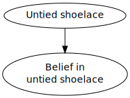 |
|
This is related in spirit to the idea seen earlier on LW [http://lesswrong.com/lw/o5/the_second_law_of_thermodynamics_and_engines_of/] that having knowledge materialize from nowhere directly violates the second law of thermodynamics because mutual information counts as thermodynamic negentropy. But the causal form of the proof is much deeper and more general. It applies even in universes like Conway's Game of Life where there's no equivalent of the second law of thermodynamics. It applies even if we're in the Matrix and the aliens can violate physics at will. Even when entropy can go down, you still can't learn about things without being causally connected to them.
The fundamental question of rationality, "What do you think you know and how do you think you know it?", is on its strictest level a request for a causal model of how you think your brain ended up mirroring reality - the causal process which accounts for this supposed correlation.
You might not think that this would be a useful question to ask - that when your brain has an irrational belief, it would automatically have irrational beliefs about process.
But "the human brain is not illogically omniscient", we might say. When our brain undergoes motivated cognition or other fallacies, it often ends up strongly believing in X, without the unconscious rationalization process having been sophisticated enough to also invent a causal story explaining how we know X. "How could you possibly know that, even if it was true?" is a more skeptical form of the same question. If you can successfully stop your brain from rationalizing-on-the-spot, there actually is this useful thing you can sometimes catch yourself in, wherein you go, "Oh, wait, even if I'm in a world where AI does get developed on March 4th, 2029, there's no lawful story which could account for me knowing that in advance - there must've been some other pressure on my brain to produce that belief."
Since it illustrates an important general point, I shall now take a moment to remark on the idea that science is merely one magisterium, and there's other magisteria which can't be subjected to standards of mere evidence, because they are special. That seeing a ghost, or knowing something because God spoke to you in your heart, is an exception to the ordinary laws of epistemology.
That exception would be convenient for the speaker, perhaps. But causality is more general than that; it is not excepted by such hypotheses. "I saw a ghost", "I mysteriously sensed a ghost", "God spoke to me in my heart" - there's no difficulty drawing those causal diagrams.
The methods of science - even sophisticated methods like the conditions for randomizing a trial - aren't just about atoms, or quantum fields.
They're about stuff that makes stuff happen, and happens because of other stuff.
In this world there are well-paid professional marketers, including philosophical and theological marketers, who have thousands of hours of practice convincing customers that their beliefs are beyond the reach of science. But those marketers don't know about causal models. They may know about - know how to lie persuasively relative to - the epistemology used by a Traditional Rationalist [http://wiki.lesswrong.com/wiki/Traditional_rationality], but that's crude by the standards of today's rationality-with-math. Highly Advanced Epistemology hasn't diffused far enough for there to be explicit anti-epistemology against it.
And so we shouldn't expect to find anyone with a background story which would justify evading science's skeptical gaze. As a matter of cognitive science, it seems extremely likely that the human brain natively represents something like causal structure - that this native representation is how your own brain knows that "If the radio says there was an earthquake, it's less likely that your burglar alarm going off implies a burglar." People who want to evade the gaze of science haven't read Judea Pearl's book; they don't know enough about formal causality to not automatically reason this way about things they claim are in separate magisteria. They can say words like "It's not mechanistic", but they don't have the mathematical fluency it would take to deliberately design a system outside Judea Pearl's box.
So in all probability, when somebody says, "I communed holistically and in a purely spiritual fashion with the entire universe - that's how I know my partner loves me, not because of any mechanism", their brain is just representing something like this:
| 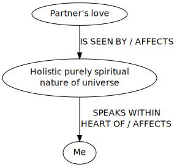 |
|
True, false, or meaningless, this belief isn't beyond investigation by standard rationality.
Because causality isn't a word for a special, restricted domain that scientists study. 'Causal process' sounds like an impressive formal word that would be used by people in lab coats with doctorates, but that's not what it means.
'Cause and effect' just means "stuff that makes stuff happen and happens because of other stuff". Any time there's a noun, a verb, and a subject, there's causality. If the universe spoke to you in your heart - then the universe would be making stuff happen inside your heart! All the standard theorems would still apply.
Whatever people try to imagine that science supposedly can't analyze, it just ends up as more "stuff that makes stuff happen and happens because of other stuff".
Mainstream status. [http://lesswrong.com/r/lesswrong/lw/ezu/stuff_that_makes_stuff_happen/#7n5n]
Part of the sequence Highly Advanced Epistemology 101 for Beginners [http://wiki.lesswrong.com/wiki/Highly_Advanced_Epistemology_101_for_Beginners]
Next post: "Causal Reference [http://lesswrong.com/lw/f1u/causal_reference/]"
Previous post: "Causal Diagrams and Causal Models [http://lesswrong.com/lw/ev3/causal_diagrams_and_causal_models/]"